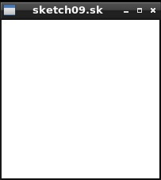
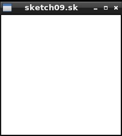

The coursework over the next two weeks counts 40% towards your credit for the unit. The coursework brings together various aspects of the course:
file handling, bit manipulation, two's complement integers, data structures, dynamic allocation, function pointers, callbacks, and graphics alongside most of
the basic C features. You will also get to work on a small multi-module program (though you only have to develop one module called sketch.c).
As always, all code you submit must be your own, do not copy any code parts from peers or other sources. The programs we use for checking against the web, your peers and other sources are advanced. (Plagiarism may result in 0 marks for the coursework, the entire unit or worse.)
Use only standard libraries, if any, so your code compiles and runs without linking any extra libraries except SDL2. You must use the provided display module only for graphics and make no direct calls to the SDL2 library. In contrast to former courseworks, this week's task has three closed-task stages which are each autotested - allowing you to check for yourselves that you secured overall marks of 50%, 58%, and 63%, respectively. Beyond that there will be an open-ended task as usual. Make sure you have finished last week's formative task before starting this coursework.
A Sketch File (.sk) is a simple image file that contains a drawing or graphic. There is a basic, intermediate, and advanced version of the
file format, each of which is backwards-compatible to include all simpler formats as subsets of the functionality. The formats have been designed to store simple
freehand sketches and more complex graphics, even animations in one compact file, in such a way that these can be viewed or replayed as an animation.
Your task will be to develop a program sketch.c which reads in and visualises .sk files using the display module displayfull.h for graphics,
a module nearly identical to the one covered in last week's formative exercise. You are not allowed to change the display module, testing module, nor the function parts and data structures already provided in
the sketch skeleton and header. You are of course allowed to implement functions and add anything you would like to the sketch.c file.
You are given the following files and modules to start your development:
sketch.zip (All Files in one Zip)
sketch.h (skeleton header)
sketch.c (skeleton)
Makefile (basic Makefile for Unix only)
displayfull.h (display header)
displayfull.c (display module)
test.c (testing framework)
sketch00.sk, sketch01.sk, sketch02.sk,
sketch03.sk, sketch04.sk, sketch05.sk,
sketch06.sk, sketch07.sk, sketch08.sk,
sketch09.sk
As you see, this assignment is going to involve lots of files. It is suggested that you create a new empty folder to work in and extract all files contained in the sketch.zip file into it before you start work. Make sure that the folder permissions are set to owner read only if you work on university computers to make sure nobody else can access your work. Back up your work regularly in any case, since data loss is not a valid extenuating circumstance.
A Basic Sketch File contains a picture made up of white lines drawn on a black background encoded (For simplicity we will stick with a fixed image size of exactly 200x200 pixels for this assignment).
Sketch files are encoded as a sequence of single-byte commands, which your program will have to translate into calls to the display module. During drawing a basic sketch file your program will have to keep track of
a current drawing state, which is a data structure defined in sketch.h. This contains the current pixel location (x,y) in the
window (which must be initialised as location (0,0) at the beginning of a sketch file), a pixel target location (tx,ty) (which must be initialised as (0,0) at the
beginning of a sketch file), and the currently set tool type (which is initialised as LINE at the beginning of a sketch file). The other fields are not used by
basic sketch files and should just be initialised to 0. For basic sketch files there are three possible single-byte commands:
TOOL to switch active line drawing on or off, DX to move horizontally, and DY to move vertically and draw a line from current to target position if the tool is switched on.
Two most significant bits of every command byte determine the opcode (which of the three commands to do) and the remaining six bits determine the operand
(what data to do it with):
EXAMPLE FILE: Lets have a look at a very simple sketch file sketch00.sk.
Since the .sk files are binary, you can't view them in a text
editor like atom easily. You can view the files with the od command in Linux though or use your
own HEX viewer developed during formative work last week. To see what the bytes of a sketch
file look like use the od command, e.g.:
od -t x1 sketch00.sk 0000000 1e 5e
A number on the first column like 0000000 says what byte position in
the binary file the line of output refers to, which is useful for larger files.
The rest of the line shows you the bytes in HEX, that is two paired hexadecimal digits for each byte.
We can see that the sketch00.sk file contains just two bytes, '1e' and '5e'. Each of these represents a single-byte command.
Since each hexadecimal digit represents a four bit nibble, the first byte '1e' translates to binary '0001 1110' and the second byte
'5e' translates to binary '0101 1110'. Looking at the two most significant bits (left two bits) tells us which command it is, i.e. which opcode.
The first byte starts with '00' and thus is the DX command, the second byte starts with '01' and thus is the DY command.
The remaining rightmost six bits represent the operands for each of these commands encoded as two-complement representation,
in both cases these are '011110' which represents +30. If needed, review Lecture 5 at this point and remember that the leftmost of the six
bits is indicative of the sign. Note that only 6 bits are used to represent the operand, not 8, so operands between -32 and 31 can be encoded.
Thus, the sketch00.sk file has the commands 'DX+30' and 'DY+30'. Given that (x,y) and (tx,ty) are initialised as (0,0) this
command will first shift tx to 30, then shift ty to 30, then draw a line from (0,0) to (30,30), and finally set (x,y) to (30,30). The
pictures that should be drawn for the five basic sketch files are shown below:
COMPILING, RUNNING AND TESTING YOUR CODE: In order to compile and run the provided skeleton files with graphics use:
clang -std=c11 -Wall -pedantic -g sketch.c displayfull.c -lSDL2 -o sketch -fsanitize=undefined -fsanitize=address
After this you can run the program on a sketch file like:
./sketch sketch00.sk
This will at the moment just show an empty 200x200 black display window, since no drawing functionality has been implemented. You can close
the window via the 'x' or ESC. You can, however, test your program even without having graphics installed. To do this,
compile and run the provided skeleton files as follows:
clang -DTESTING -std=c11 -Wall -pedantic -g sketch.c test.c -o test -fsanitize=undefined -fsanitize=address
After this you can test your program (which requires all the 10 sketch files for testing to be in your local folder):
./test
We will use exactly the commands above to test your code (with our fresh test.c copy), so do not add any further -D macro definitions to your compilation commands.
Currently testing fails, of course. Testing will tell you either which line of tests in the test.c program fails
or which drawing command that should be done by a sketch file was not correctly called by your program. (To do that, the testing module
'plays' the role of the graphics module and checks all the graphics calls made against the deterministic sequence of calls that must
be made for each of the sketch files. Intercepting, replacing or forwarding calls of a software component is known as a 'proxy'. Note
that the compiler flag -DTESTING is critical in conditionally compiling different main functions for use for testing or use with graphics.)
STRUCTURE OF SKETCH PROGRAM: The sketch.h file summarises the API of the sketch module. If not compiled for TESTING,
the main(...) function of sketch.c simply checks that a single argument is provided for the filename and then
calls the view(...) function with the provided filename (of the sketch file to view) as argument:
#ifndef TESTING
int main(int n, char *args[n]) {
if (n != 2) { // return usage hint if not exactly one argument
printf("Use ./sketch file\n");
exit(1);
} else view(args[1]); // otherwise view sketch file in argument
return 0;
}
#endif
Exactly like in the excercises last week, in the view(...) function a new display window is created, some state is created
and then the run(...) function of the graphics module is called and handed our function processSketch(...) via a function
pointer in order to be called back by run(...) repeatedly. Once this run(...) function returns, both state and display are freed:
void view(char *filename) {
display *d = newDisplay(filename, 200, 200);
state *s = newState();
run(d, s, processSketch);
freeState(s);
freeDisplay(d);
}
During the execution of the program our processSketch(...) function is called repeatedly. It will be your task to implement it so that everytime
it is called it opens the sketch file, reads the commands and draws the full picture, shows it in the window, and then closes the file.
The getName(...) function of the display module can be used to get the filename of the sketch file to open:
bool processSketch(display *d, void *data, const char pressedKey) {
//TO DO: OPEN, PROCESS/DRAW A SKETCH FILE BYTE BY BYTE, THEN CLOSE IT
//NOTE: CHECK DATA HAS BEEN INITIALISED... if (data == NULL) return (pressedKey == 27);
//NOTE: TO GET ACCESS TO THE DRAWING STATE USE... state *s = (state*) data;
//NOTE: TO GET THE FILENAME... char *filename = getName(d);
//NOTE: DO NOT FORGET TO CALL show(d); AND TO RESET THE DRAWING STATE APART FROM
// THE 'START' FIELD AFTER CLOSING THE FILE
return (pressedKey == 27);
}
Finally, to interpret the single-byte commands of a sketch file there are three helper functions which we will focus on first:
// Extract an opcode from a byte (two most significant bits).
int getOpcode(byte b) {...}
// Extract an operand (-32..31) from the rightmost 6 bits of a byte.
int getOperand(byte b) {...}
// Execute the next byte of the command sequence.
void obey(display *d, state *s, byte op) {...}
DRAWING STATE: Your first task is to implement the newState(...) and freeState(...) functions. The former should allocate memory for a
drawing state structure defined in sketch.h and initialise it as discussed above. The latter function should release this memory.
OPCODES: Your second task is to implement the int getOpcode(byte b) {...} function, which given a single-byte command has to return which of
the opcodes DX, DY, or TOOL it represents. The possible opcodes to return for basic commands are defined in the sketch.h header file.
Once you have implemented this function correctly the first 10 tests will pass and you should see the output 'Opcode Tests OK.' when testing your program.
OPERANDS: Your third task is to implement the int getOperand(byte b) {...} function, which given a single-byte command has to return the
value of the operand represented by the rightmost 6 bits as a two's complement integer. The possible return values range from -32 to 31. When extracting the operand from the
byte and storing it in an int remember the sign expansion must be performed correctly (see Lecture 5 for details). Once you have implemented this function correctly
the second 10 tests will pass and you should now also see the output 'Operand Tests OK.' when testing your program.
COMMANDS: Your fourth task is to implement the void obey(display *d, state *s, byte op) {...} function. Given pointers to the display
and drawing state, and a single-byte command it first has to call the functions to get opcode and operand, and then it has to carry out the command represented.
This will mean that you will need to implement each of the three commands. As described above, these may change the drawing state or call the line(...)
function of the display module. You may want to create a helper function for each of the three commands to keep the obey(...) function small.
Once you have implemented this function correctly and the drawing state is allocated, initialised and realeased correctly then the tests up to test 35 should pass
and you should now see another line of success output when testing your program.
READING/VIEWING SKETCH FILES: Your final task in the creation of a basic sketch viewer is to implement the middle part of the
processSketch(...) function. Everytime the function is called it should open the sketch file as a binary file, read the command bytes and for
each byte read ask the obey(...) function to carry out the command. As said before, the getName(...) function of the display module
can be used to get the filename of the sketch file to open. Make sure you call the show(...) function of the display module after processing the file
so that all changes can be seen on the diaplay window. Also reset the current position, target position and tool of the drawing state back to their
initial values either after or before processing your file to comply with the standard. Everytime the processSketch(...) function is called the entire file
is processed again. Once you have implemented this function correctly you should see
'ALL BASIC TESTS PASS.' when testing your program, and you should be able to correctly view the first five example sketch files, that is sketch00.sk to
sketch04.sk. If you have reached this point successfully and all basic tests indeed pass successfully then you will have passed your coursework and will
receive at least 50 marks.
One major limitation of the basic sketch file format is that each operand can only be 6bits long. As a consequence it would be difficult to stick to single-byte commands as required for all sketch files and yet provide commands for setting absolute locations for target positions (even when working with 200x200 pixel display windows), or for changing RGBA colour values that are 32bits long. The Intermediate Sketch File Format addresses this problem by starting to use the 'data' field in the drawing state and by introducing one more command, that is the opcode DATA:
In addition, after executing any TOOL command the 'data' field of the drawing state is set to 0. Together with the DATA command this allows to build up the 'data' value of the drawing state by reading an entire sequence of DATA commands. The Intermediate Sketch File Format also introduces new tool types for using the TOOL command:
Extend your obey(...) and helper functions to implement the above behaviour. Once you have implemented this functionality correctly you should see
'ALL INTERMEDIATE TESTS PASS.' when testing your program, and you should be able to correctly view the next three example sketch files, that is sketch05.sk to
sketch07.sk. If you have reached this point successfully as described and all intermediate tests indeed pass successfully then you will
receive at least 58 marks.
The final advanced version introduces three further tools:
show(...)
function of the display module is made.pause(...) function of the display module is called
using the 'data' field of the drawing state as representing the number of milliseconds to wait. Thus, this is a one-off tool that just causes the system to wait for a bit.
processSketch(...) function returns.
Note that the start field is the only field that is not reset after closing the sketch file. It is used to resume processing with the command following the
NEXTFRAME TOOL command once the processSketch(...) function is called again. So instead of processing the sketch file from the start
every time processSketch(...) is called, processing is started in the middle of the file. This allows to process the content of a sketch file frame-by-frame, animating
its content.
Extend your processSketch(...), obey(...) and helper functions to implement the above behaviour. Once you have implemented this functionality correctly
you should see 'ALL ADVANCED TESTS PASS.' when testing your program. Tests are deliberately kept simple to focus on key functionality only.
You should be able to correctly view all example sketch files, that is sketch00.sk to
sketch09.sk. If you have reached this point successfully as described and all tests indeed pass successfully then you will receive at least 63 marks.
 
Only if you have time left, and you have fully finished all closed tasks and if you are interested or you want more than 63% for the assignment, you can do some extra open-ended work in your own
program called converter.c on the following task:
Using only standard libraries and the displayfull.h module for graphics if wanted (no other calls to SDL2 are allowed and compilation does not require any macro definitions like -D), write a program that takes a
PGM image file in the basic format (see pgm.c from the lectures) and converts it into a sketch file fully compliant with the description in the closed task:
./converter myimage.pgm File myimage.sk has been written.
The resulting sketch file should be as small as possible and show the same image when viewed with the sketch viewer. In a second step, and only if you have time, extend your converter so that if your converter is called with this sketch file it produces the exact PGM image file that was used to create the sketch file in the first place (lossless):
./converter myimage.sk File myimage.pgm has been written.
Remember you can only use the displayfull.h module, not other SDL2 functionality (like reading pixel values). Test your program at least on the two images bands.pgm and fractal.pgm. A jpg approximation of the two images is shown below:
Write the source file converter.c which must compile error-free and warning-free for your submission, and running your tests with advanced
compiler options should convince us that there are no segfaults or memory leaks from your own code. Rather submit something simple that works robustly and
error-free than buggy code (which may earn you very few marks only). Write a summary file readme.txt which describes your aims for the program
and how far you got with it in strictly no more than 100 words. Start your summary by telling us the file size of the lossless sketch file
your converter creates from fractal.pgm.
There are no marks for report writing, but the summary may be necessary for us to make sense
of the program. Even if your program is very basic and runs fine, still submit it: just treating every pixel of the PGM image as producing a COLOUR, TARGETX, TARGETY,
and DY command (together with the DATA commands for loading) to draw a BLOCK in the sketch file can solve the above task in a basic way (although such a sketch file
will be large). Whenever you have reached a well working version, take a copy of your work, so you can revert back to it at any point. For extended work you may
want to do some research into techniques such as RunLength Encoding (RLE) in one or more dimensions to make your sketch files as small as possible. The task is truly
open-ended, but make sure you do not overspend on time. Make sure your programming adheres to the Unit Programming Style Guide.
Enjoy programming, our lab team and the forum are there for you if you need help!
A mark out of 37 for the extra work will be awarded by swiftly reading the summary, checking whether your program matches what you claim, judging the sophistication and extent of what has been done, and checking whether the program follows the conventions and advice in the lectures. In particular, writing tests as part of the program is very important and fundamental for first class work. Also recommended is working in very small steps, one test at a time, keeping your program in a working state. Again, make sure you do manage your time well and stop at a reasonable point. Remember, there are significantly deminishing returns.
The mark will aim to make your total for the assignment meet the university
scale. So assuming you get full 63 marks for the sketch.c program, for the open-ended task 5/37 means
"this raises your total result from very good to almost excellent", 7/37 onwards means "this raises your total result to excellent, overall above and beyond what was expected",
17/37 means "truly exceptional work, potential mastery of the subject area" and 27/37 means
"novel and publishable in a research journal".
Submit your work via Blackboard. Submit at least ONE HOUR before the deadline to make sure there are no upload problems. This is absolutely critical since
the university systems will automatically apply penalties of 10 percent points off per day that coursework is submitted late, even if only by one second.
All code you submit must be your own, do not copy any code parts from peers or other sources.
The programs we use for checking against the web, your peers and other sources are advanced.
(Plagiarism may result in 0 marks for the coursework, the entire unit or worse.) If you resubmit work then submit all files again (e.g. sketch.c, converter.c, and readme.txt) not just the updated ones.
Closed Tasks: Submit your program sketch.c (not Sketch.c or
any other name, unless you want to lose marks, and not the compiled
program). Make sure your program compiles without warnings, runs without segfaults, and doesn't still contain debugging print statements.
Open-ended Task: If you attempted the open-ended part, then also submit your extra program converter.c and a no more than 100 words readme.txt file
with any comments you might want to make.